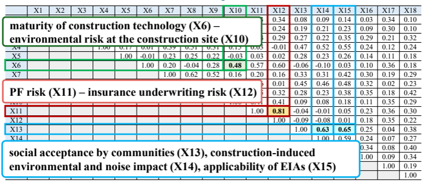
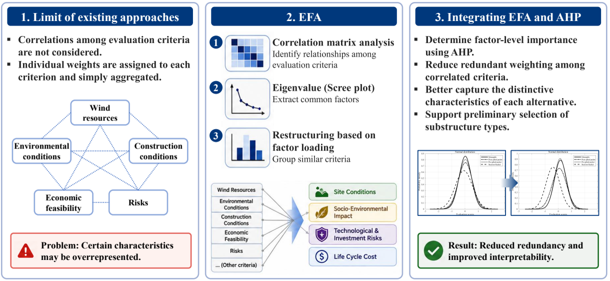
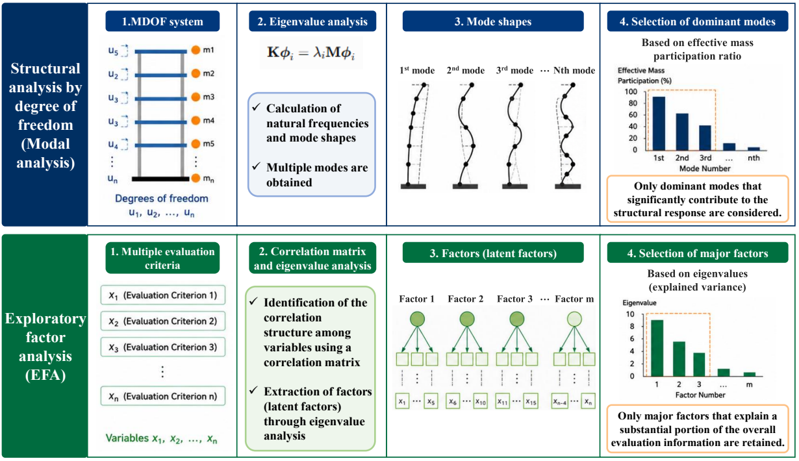
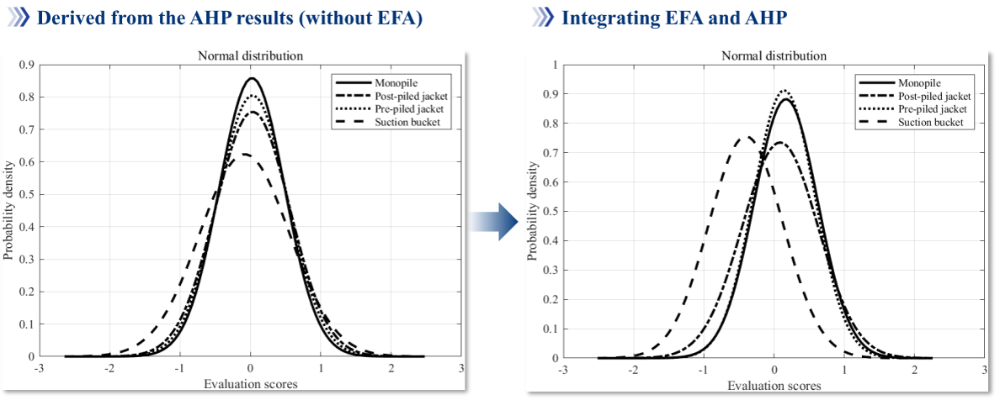

평가기준이 많으면 의사결정이 더 공정해질까?
서로 상관된 기준이 같은 정보를 반복해서 반영하는 문제와 EFA–AHP의 역할
다기준 의사결정, 다기준 의사결정 방법, MCDM, 계층적 분석 기법, 계층분석법, AHP, 탐색적 요인분석, EFA, EFA-AHP, 평가기준 상관관계, 평가기준 중복, 의사결정 편향, 공학 의사결정, 해상풍력 지지구조 선정, 고정식 해상풍력 지지구조, 해상풍력 의사결정
건설사업에서는 끊임없이 선택을 한다.
기획 단계에서는 사업성, 입지, 경제성과 환경성을 검토하고, 설계 단계에서는 구조형식과 공법, 재료를 정한다. 시공 단계로 넘어가도 공정계획과 시공방법을 선택해야 하고, 이후에는 유지관리 방안까지 결정해야 한다.
이런 문제는 하나의 기술적 기준만으로 답을 내리기 어렵다. 경제성, 시공성, 안전성, 환경성, 사업위험, 사회적 수용성처럼 성격이 다른 기준을 함께 봐야 한다. 그래서 건설 분야에서는 다기준 의사결정(Multi-Criteria Decision-Making, MCDM)이 널리 사용된다.
그런데 평가기준을 많이 넣으면 의사결정이 더 공정해질까?
얼핏 보면 그렇다. 빠뜨리는 항목 없이 가능한 한 많은 기준을 검토하는 편이 더 합리적으로 보인다.
문제는 평가기준의 수와 독립적인 정보의 수가 같지 않다는 데 있다.
평가기준이 많다고 해서 서로 독립적인 판단정보가 많아지는 것은 아니다.
예를 들어 공사기간이 늘어나면 장비 운용기간과 인건비가 증가하고, 결과적으로 전체 공사비에도 영향을 준다. 공사기간, 장비 운용비, 인건비, 공사비를 각각 독립된 기준으로 놓으면 이름은 네 개지만 상당한 공통정보를 포함하게 된다.
이들을 각각 별개의 기준으로 평가하면 경제성과 관련된 하나의 특성이 여러 경로를 통해 최종평가에 반복적으로 반영될 수 있다. 반면 환경성과 관련된 항목이 하나뿐이라면 그 특성은 한 번만 반영된다.
누구도 의도적으로 경제성에 높은 가중치를 주지 않았는데도 평가 항목의 구성과 세분화 정도 자체가 결과를 편향시킬 수 있는 것이다.
이 문제가 우리가 고정식 해상풍력 지지구조의 의사결정 방법을 연구하게 된 출발점이었다.
S. Lee, Y. Kang, Y. Kim, S. Kim, and G. Zi,
“Integrated EFA–AHP decision-making framework for fixed offshore wind energy substructures,”
Ocean Engineering, Vol. 349, 124094, 2026.
따라서 가중치를 정하기 전에 더 근본적인 질문을 해야 한다.
설정한 평가 항목들이 실제로 서로 다른 판단정보를 제공하고 있는가?
편향은 사람에게만 생기는 것이 아니다
다음 여섯 가지 기준으로 여러 설계안을 비교한다고 생각해보자.
- 공사비
- 공사기간
- 장비 임대비
- 인건비
- 유지관리비
- 환경영향
여섯 가지나 고려했으니 상당히 균형 잡힌 평가처럼 보인다.
문제는 앞의 네 기준이 서로 연결되어 있다는 것이다. 공사기간은 인건비와 장비 임대비에 영향을 주고, 이 비용들은 다시 전체 공사비에 들어간다.
따라서 여섯 개의 이름이 있다고 해서 여섯 개의 독립된 정보가 있는 것은 아니다.
이들을 모두 별개의 기준으로 취급하면 경제성과 관련된 정보가 최종 평가에 여러 번 들어갈 수 있다. 환경영향은 한 번 들어가는데 경제성은 이름만 달리해서 몇 번 들어가는 셈이다.
이것은 평가자가 의도적으로 만든 편향이 아니다.
중복된 기준이 만들어내는 구조적 편향이다.
기준이 많아질수록 이 문제는 오히려 눈에 잘 보이지 않는다.
AHP에서 가중치를 잘 정하면 해결되지 않을까?
AHP(Analytic Hierarchy Process, 계층적 분석 기법)는 공학 분야에서 널리 사용되는 다기준 의사결정 방법이다.
절차도 직관적이다.
- 평가기준을 정한다.
- 기준 사이의 상대적 중요도를 쌍대비교한다.
- 가중치를 계산한다.
- 대안을 평가한다.
- 최종 점수를 계산한다.
전문가의 판단을 정량적인 가중치로 바꿀 수 있고, 판단의 일관성도 확인할 수 있다는 장점이 있다.
하지만 문제는 그보다 앞에 있다.
서로 다른 이름의 기준들이 실제로 독립적인가?
AHP는 주어진 평가구조 안에서 전문가의 선호와 중요도를 체계적으로 산정하는 데 강점이 있다. 그러나 평가 항목 사이의 중복성과 상관성을 자동으로 제거하는 방법은 아니다. 평가구조가 적절하지 않다면 정교하게 가중치를 산정해도 그 구조를 그대로 반영하게 된다.
다시 말해, 계산의 정밀성이 평가구조의 타당성을 보장하지는 않는다.
우리의 해상풍력 연구에서는 프로젝트 파이낸싱(Project Financing, PF) 위험과 보험 인수 위험의 상관계수가 0.81이었다.
또한 지역주민 수용성과 환경영향평가 적용성 사이의 상관계수는 0.65였다.
이름은 서로 다른 기준이지만 상당한 정보를 공유하고 있다는 뜻이다.

따라서 “어느 기준이 더 중요한가?”라고 묻기 전에 한 가지를 먼저 물어야 한다.
이 기준들이 정말 서로 다른 의사결정 차원을 나타내는가?
가중치를 정하기 전에 평가구조부터 정리하자
우리가 택한 방법은 AHP 앞에 탐색적 요인분석(Exploratory Factor Analysis, EFA)을 두는 것이었다.
서로 중복될 수 있는 긴 기준 목록에 곧바로 가중치를 주지 않고, 먼저 데이터 속에 숨어 있는 구조를 확인한다.

EFA는 다수의 관측변수 사이에 존재하는 상관구조를 이용해, 이들 변수에 공통적으로 내재된 소수의 잠재요인(latent factor)을 찾는 방법이다.
공학적으로 표현하면 질문은 이렇다.
서로 다른 이름으로 나열된 평가 항목들이 실제로는 어떤 공통된 판단축을 공유하고 있는가?
그 정보구조를 먼저 정리한 다음에 AHP를 이용해 상대적인 중요도를 정한다.
여기서 EFA와 AHP의 역할을 섞지 않는 것이 중요하다.
18개 기준에서 네 개의 독립적인 요인으로
해상풍력 적용에서는 시공성, 경제성, 사업위험, 사회·환경영향 등을 나타내는 18개 평가기준에서 출발했다.
설문에는 해상풍력 개발과 관련된 학계, 산업계 및 공공기관 전문가 164명이 참여했다.
요인분석을 하기 전에 자료가 EFA에 적합한지도 확인했다.
Kaiser–Meyer–Olkin 지표는
\[ \mathrm{KMO}=0.868 \]
이었고, Bartlett 검정에서는 상관행렬이 단위행렬이라는 가설이 기각되었다.
분석 결과 18개 기준은 누적분산의 60.30%를 설명하는 네 개의 주요 독립요인으로 정리할 수 있었다.
| 요인 | 대표적인 의미 |
|---|---|
| 사회·환경적 영향 | 주민 수용성, 환경영향과 소음, 환경영향평가 적용성, 해체 |
| 기술 및 투자 위험 | 기술 성숙도, 프로젝트 금융위험, 보험위험 |
| 현장조건 | 제작 조건과 시공 가능성 |
| 생애주기 비용 | 공사비, 공사기간, 운영·유지관리비 |
여기서 중요한 것은 18개를 4개로 줄였다는 숫자 자체가 아니다.
서로 중복되는 정보를 묶어, 18개의 세부 평가 항목을 보다 명확하고 직교적인 네 개의 판단축으로 평가구조를 재구성했다는 것이다.
구조동역학으로 생각하면 조금 더 쉽다
구조공학에서는 복잡한 시스템의 모든 자유도를 항상 그대로 들고 계산하지 않는다.
모드해석을 생각해보자. 매우 많은 자유도를 가진 구조물이라도 관심 있는 응답에는 몇 개의 지배적인 모드가 훨씬 크게 기여할 수 있다.

물론 EFA와 구조물의 모드해석이 같은 해석이라는 뜻은 아니다. 다만 많은 변수에서 지배적인 성분을 추출해 전체 구조를 이해한다는 점에서 개념적으로 비교해볼 수 있다.
구조물의 모드해석에서는
- 많은 자유도가 구조계를 기술하고,
- 고유치해석을 통해 모드형상을 구하며,
- 관심 응답에 중요한 지배모드를 선택할 수 있다.
EFA에서는
- 많은 평가기준이 의사결정 문제를 기술하고,
- 상관행렬과 고유치 분석을 통해 잠재구조를 찾으며,
- 정보의 상당 부분을 설명하는 주요 요인을 남긴다.
두 경우 모두 목적은 변수를 무조건 없애는 것이 아니다.
중복을 줄이면서 지배적인 독립 정보를 남기는 것이다.
EFA는 중요도를 결정하지 않는다
여기서 오해하면 안 되는 것이 있다.
EFA가 어느 요인이 더 중요하다고 결정해 주는 것은 아니다.
예를 들어 공사비, 공사기간, 운영·유지관리비가 하나의 생애주기 비용 요인으로 묶인다는 것은 알려줄 수 있다. 하지만 생애주기 비용이 기술위험보다 더 중요한지는 통계가 결정할 문제가 아니다.
그것은 여전히 공학적 판단과 사업의 우선순위에 달려 있다.
그래서 그 다음에 AHP를 사용한다.
EFA로 기준을 보다 독립적인 요인으로 정리한 뒤, 그 요인 사이의 상대적인 중요도를 AHP로 정한다.
이 연구에서는 학계, 발주자 및 시공자의 관점을 대표하는 5명의 평가자가 다음과 같은 통합 가중치를 도출했다.
| 요인 | 가중치 |
|---|---|
| 기술 및 투자 위험 | 0.443 |
| 생애주기 비용 | 0.245 |
| 현장조건 | 0.192 |
| 사회·환경적 영향 | 0.121 |
모든 평가자의 일관성 비율(consistency ratio)은 0.1보다 작아 쌍대비교의 일관성이 허용 가능한 수준이었다.
두 방법의 역할은 분명히 다르다.
EFA는 평가자료에 나타난 상관관계를 바탕으로 평가기준의 구조를 정리한다.
AHP는 그렇게 정리된 판단기준 가운데 무엇을 상대적으로 중요하게 볼 것인지 결정한다.
결국 평가구조와 사업별 우선순위를 분리하는 것이 EFA–AHP 통합 방법의 핵심이다.
실제 해상풍력 지지구조를 평가하면
우리는 네 가지 고정식 해상풍력 지지구조 대안을 비교했다.
- 모노파일(monopile)
- 포스트파일 재킷(postpiled jacket)
- 프리파일 재킷(prepiled jacket)
- 석션버켓(suction bucket)
각 대안의 장단점은 서로 달랐다.
예를 들어 석션버켓은 사회·환경 요인에서는 좋은 평가를 받았지만 기술 및 투자 위험에서는 낮은 평가를 받았다. 포스트파일 재킷은 현장조건에서 좋은 평가를 받았고, 모노파일은 생애주기 비용에서 좋은 평가를 받았다.
요인점수와 AHP 가중치를 결합한 최종 점수는 다음과 같았다.
| 대안 | 최종 점수 |
|---|---|
| 모노파일 | 0.127 |
| 프리파일 재킷 | 0.102 |
| 포스트파일 재킷 | 0.056 |
| 석션버켓 | -0.284 |
순위만 보면 모노파일이 가장 좋은 대안이다.
하지만 공학적인 의사결정은 여기서 끝내면 안 된다.
1등이라는 것만으로 충분한가?
모노파일과 프리파일 재킷의 최종 점수 차이는
\[ 0.025 \]
에 불과했다.
평가자 사이의 변동을 확인해보면 프리파일 재킷의 표준편차는 모노파일보다 약간 작았다.
\[ 0.388 \quad\text{versus}\quad 0.405. \]
두 표본의 통계검정에서도 평균 차이는 통계적으로 유의하지 않았다.
- \(p = 0.571\)
- 95% 신뢰구간: \((-0.061,\ 0.111)\)
- Cohen’s \(d = 0.062\)
이 결과는 꽤 중요한 공학적 의미를 갖는다.
평균점수만 최대화한다면 모노파일이 1위다.
하지만 사업에서 이해관계자의 합의와 판단의 안정성을 더 중요하게 본다면 프리파일 재킷 역시 충분히 타당한 선택이고, 경우에 따라서는 오히려 더 적절할 수 있다.
결국 의사결정에서 중요한 것은 순위를 하나 만드는 것만이 아니다.
그 순위를 얼마나 믿을 수 있는가까지 확인해야 한다.
중복을 제거하니 실제로 좋아졌는가?
통합 EFA–AHP 방법을 기존 AHP와 비교했다.

이 연구에서는 상당한 차이가 나타났다.
통합 방법은
- 변동계수를 75.41% 감소시켰고,
- 신호대잡음비(SNR)를 3.08배 증가시켰다.
이 연구의 자료와 설정에서는 평가결과가 더 안정되고 대안 사이의 구별도 더 뚜렷해졌다는 의미다.
그렇다고 EFA가 전문가 판단을 객관적인 것으로 바꾸어 준다는 뜻은 아니다.
그 역할은 훨씬 구체적이다.
평가기준 간 상관구조를 먼저 정리하여, 동일하거나 유사한 판단정보가 여러 항목을 통해 최종평가에 반복적으로 들어가는 효과를 줄이는 것이다.
왜 이런 개선이 생기는가?
원리는 간단하다.
서로 강하게 상관된 여러 기준이 사실 하나의 공통 관심사를 나타낸다고 해보자.
기존 AHP에서 각각 별도의 가중치를 주면 같은 정보가 최종 평가에 반복해서 들어갈 수 있다.
\[ \text{공유된 정보} \rightarrow \begin{cases} X_1\\ X_2\\ X_3 \end{cases} \rightarrow \text{여러 번의 가중 기여}. \]
EFA는 이들에 공통으로 들어 있는 잠재성분을 찾으려고 한다.
\[ (X_1,X_2,X_3) \rightarrow F_1. \]
그 다음에는 서로 겹치는 세 표현에 각각 가중치를 주는 대신 그 요인에 가중치를 준다.
따라서 목적은 단순히 평가 항목의 수를 줄이는 것이 아니다.
가중치를 산정하기 전에 평가기준 간 상관성과 중복성을 확인하고, 평가구조 자체를 먼저 정리하는 것이다.
다른 공학 의사결정에도 적용할 수 있을까?
이 생각은 해상풍력에만 국한되지 않는다.
평가기준이 많고 서로 중복될 가능성이 있는 문제라면 다음과 같은 순서가 합리적이다.
- 후보 평가기준을 정한다.
- 평가자료를 수집한다.
- 기준 사이의 상관관계를 확인한다.
- 자료가 요인분석에 적합한지 검토한다.
- 잠재요인을 추출하고 공학적으로 해석한다.
- 요인 사이의 상대적 중요도를 결정한다.
- 대안을 평가한다.
- 민감도와 이해관계자별 변동을 확인한다.
예를 들면 인프라 계획, 구조시스템 선정, 공법 선정, 지속가능성 평가, 기술 선정, 입지 선정, 투자 의사결정 등에 같은 문제가 나타날 수 있다.
결국 순서는 이것이다.
가중치를 주기 전에 평가기준의 정보구조부터 이해하자.
그렇다고 모든 편향이 없어지는 것은 아니다
이 방법에도 분명한 한계가 있다.
첫째, 처음 만든 평가기준 목록 자체에 중요한 항목이 빠져 있을 수 있다. EFA는 수집된 정보를 재구성할 수 있을 뿐, 애초에 조사하지 않은 중요한 기준을 새로 찾아내지는 못한다.
둘째, 이 해상풍력 사례에서는 환경 및 경제 조건을 단순화하였다. 실제 사업에서는 바람, 파랑, 조류, 비용과 여러 불확실성이 시간에 따라 변한다.
셋째, 평가자의 전문성과 경험이 서로 다를 수 있음에도 이 연구에서는 평가자들의 의사결정 역량을 동일하게 취급했다.
마지막으로 AHP의 가중치는 여전히 주관적인 쌍대비교에서 나온다.
따라서 EFA는 평가기준 사이의 중복을 줄일 수 있지만 의사결정자의 선호 자체를 없애지는 않는다.
향후에는 적절한 자료가 확보된다면 보다 데이터 기반의 가중치 결정이나 평가자별 전문성을 반영하는 방법과 결합할 수 있다.
결국 편향은 어디에 숨어 있었나?
공학 의사결정의 편향이 항상 평가자의 주관에서만 생기는 것은 아니다.
때로는 평가 항목을 구성하는 단계에서 이미 편향이 들어갈 수 있다.
여러 기준이 같은 정보를 공유하는데도 이를 서로 독립적인 기준처럼 다루면 특정 의사결정 차원이 의도하지 않게 증폭될 수 있다.
EFA–AHP의 역할은 이를 두 단계로 나누는 것이다.
- EFA로 서로 중복된 기준에서 독립적인 잠재요인을 찾고,
- AHP로 그 요인들 사이에 공학적 우선순위를 부여한다.
이렇게 한다고 완전히 객관적인 의사결정이 되는 것은 아니다.
하지만 무엇이 중복되었고, 어디에서 판단이 들어갔는지가 훨씬 분명해진다.
이 글에서 기억할 원칙은 하나다.
중요도를 정하기 전에 정보의 구조부터 이해하자.
Original research
Lee, S., Kang, Y., Kim, Y., Kim, S., & Zi, G. (2026).
Integrated EFA–AHP decision-making framework for fixed offshore wind energy substructures.
Ocean Engineering, 349, 124094.
https://doi.org/10.1016/j.oceaneng.2025.124094